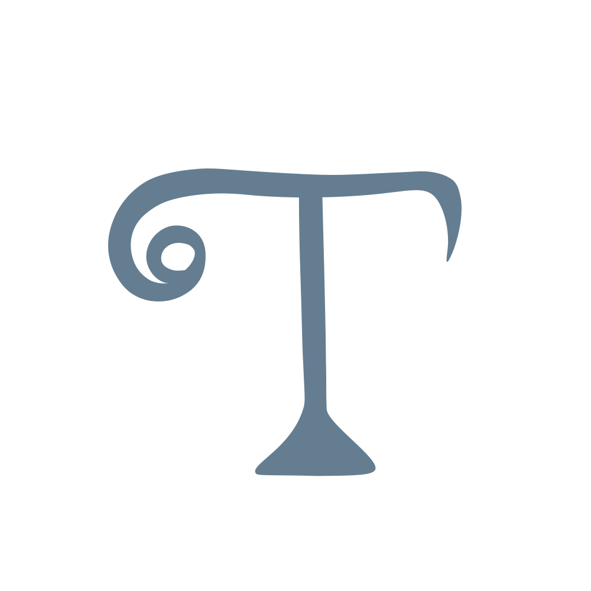
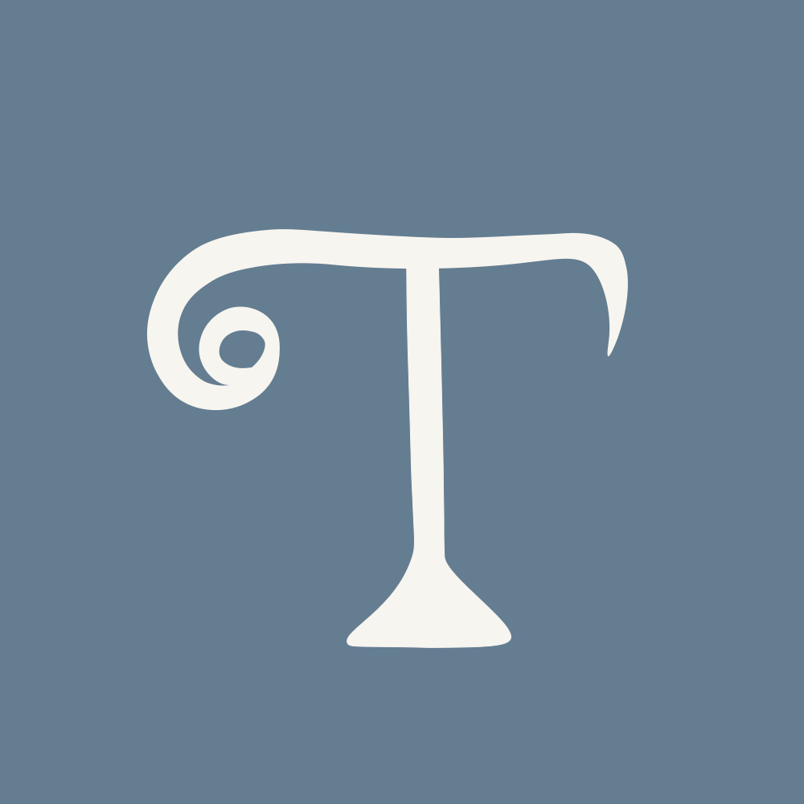

LOGO DESIGN
TENZIN
A personal monogram that balances elegance, creativity, and approachability.
Logo Variations
01
Black & White
The black logo is designed for white or light backgrounds, print materials, and monochrome use.
02
Color Variation
The primary Dusty Blue logo is intended for portfolio branding, websites, and digital materials.

03
Reverse Version
The reversed logo is designed for dark backgrounds, providing contrast and clear visibility.
04
Favicon
A compact 32 × 32 px version of the monogram for browser tabs and small digital applications.
Color Palette
Dusty Blue
#647D91
Light Blue
#B5C6D0
Ivory
#F7F5F0
Dark Navy
#293B49
Usage Guidelines
- Maintain clear space around the monogram.
- Use dark logo variations on light backgrounds.
- Use the reversed logo on dark backgrounds.
- Preserve the logo's original proportions.
- Use the 32 × 32 px favicon in browser tabs.